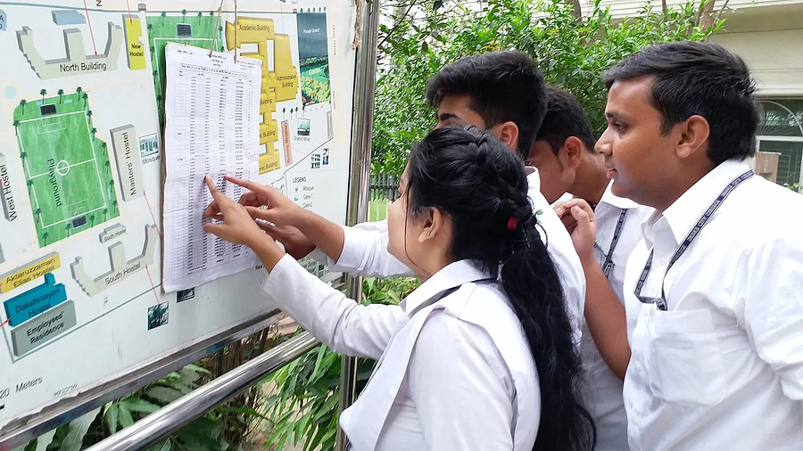

আপডেট: ০৮ আগস্ট ২০২৩, ১১: ৩১
ডেঙ্গুর রোগের প্রকোপ চলছে এখন সারা দেশেই। এ জন্য এইচএসসি ও সমমানের কোনো কোনো পরীক্ষার্থী ও তাঁদের অভিভাবক চান ১৭ আগস্টে পরীক্ষা শুরু না করে আরও কিছুদিন যেন পিছিয়ে দেওয়া হয়। পরীক্ষার্থী ও অভিভাবকদের একাংশ পরীক্ষা পেছানোর দাবি করলেও শিক্ষা বোর্ডগুলো বলছে, এখন পর্যন্ত পরীক্ষা পিছিয়ে দেওয়ার কোনো সম্ভাবনা নেই। ঘোষিত সময়েই পরীক্ষা শুরু হবে। আসন্ন এইচএসসি ও সমমান পরীক্ষা সুষ্ঠু, নকলমুক্ত ও ইতিবাচক পরিবেশে অনুষ্ঠানের লক্ষ্যে আজ মঙ্গলবার এ–সংক্রান্ত জাতীয় মনিটরিং ও আইনশৃঙ্খলাবিষয়ক কমিটির সভা ডাকা হয়েছে। বেলা তিনটায় সভা শেষে এ বিষয়ে প্রেস ব্রিফিং করবেন শিক্ষামন্ত্রী দীপু মনি।
এখন ডেঙ্গুর প্রকোপ চলছে। আবার কোনো কোনো এলাকায় অতিবৃষ্টিতে জলাবদ্ধতা–সংক্রান্ত সমস্যা হচ্ছে। এ কারণে কোনো কোনো পরীক্ষার্থী ও তাঁদের অভিভাবকদের দাবি, পরীক্ষাটি যেন আরও কিছুদিন পিছিয়ে দেওয়া হয়। তাঁদের কারও কারও দাবি, ডেঙ্গুর কারণে কোনো কোনো পরীক্ষার্থী ঠিকমতো প্রস্তুতি নিতে পারছেন না।